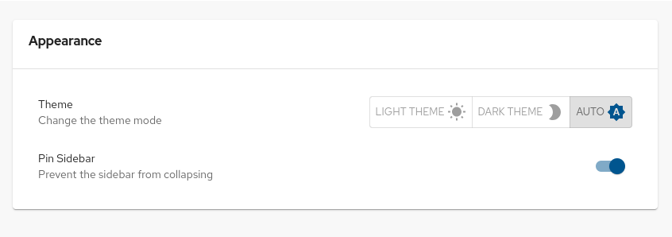

Customizing Red Hat Developer Hub
Customizing Red Hat Developer Hub appearance and features, such as templates, Learning Paths, Tech Radar, Home page, and quick access cards
Abstract
- 1. Customizing your Red Hat Developer Hub title
- 2. Customizing your Red Hat Developer Hub base URL
- 3. Customizing Red Hat Developer Hub backend secret
- 4. About Software Templates
- 5. Customizing the Learning Paths in Red Hat Developer Hub
- 6. Configuring the global header in Red Hat Developer Hub
- 6.1. Customizing your Red Hat Developer Hub global header
- 6.2. Mount points for dynamic plugin integration
- 6.3. Configuring the logo in the global header
- 6.4. Enabling logo in the sidebar
- 6.5. Displaying the preferred username in the profile dropdown
- 6.6. Quicklinks and Starred Items in the global header
- 6.7. Enabling Quicklinks and Starred Items after an upgrade
- 7. Configuring a floating action button in Red Hat Developer Hub
- 8. Customizing the Quickstart plugin
- 9. Customizing the Tech Radar page in Red Hat Developer Hub
- 10. Customizing Red Hat Developer Hub appearance
- 10.1. Customizing the theme mode for your Developer Hub instance
- 10.2. Customizing the branding logo of your Developer Hub instance
- 10.3. About the sidebar menu items for your Developer Hub instance
- 10.4. Configuring entity tab titles
- 10.5. Configuring entity detail tab layout
- 10.6. Customizing the theme mode color palettes for your Developer Hub instance
- 10.7. Customizing the page theme header for your Developer Hub instance
- 10.8. Customizing the font for your Developer Hub instance
- 10.9. Default Red Hat Developer Hub theme
- 10.10. Default Backstage theme
- 10.11. Loading a custom Developer Hub theme by using a dynamic plugin
- 10.12. Custom component options for your Developer Hub instance
- 11. Customizing the Home page
- 12. Customizing the Quick access card
- 13. Customizing the RHDH Metadata card on the Settings page
Authorized users can customize Red Hat Developer Hub (RHDH) appearance and features, such as templates, Learning Paths, Tech Radar, Home page, and quick access cards.
1. Customizing your Red Hat Developer Hub title
You can change the default Red Hat Developer Hub display name.
Prerequisites
Procedure
In your custom
app-config.yamlfile, enter your Developer Hub instance display name, such as <Red Hat Developer Hub>.app-config.yamlexcerptapp: title: My custom Red Hat Developer Hub title
2. Customizing your Red Hat Developer Hub base URL
You can change the default Red Hat Developer Hub base URL.
Prerequisites
- You know your desired Developer Hub external URL: https://<my_developer_hub_domain>, and have configured DNS to point to your Red Hat OpenShift Container Platform cluster.
- Custom Developer Hub configuration.
Procedure
In your custom
app-config.yamlfile, enter your Developer Hub external URL, such as https://<my_developer_hub_domain>.app-config.yamlexcerptapp: baseUrl: https://<my_developer_hub_domain> backend: baseUrl: https://<my_developer_hub_domain> cors: origin: https://<my_developer_hub_domain>
3. Customizing Red Hat Developer Hub backend secret
The default Red Hat Developer Hub configuration defines the Developer Hub backend secret for service to service authentication.
You can define your custom Developer Hub backend secret.
Prerequisites
- You added a custom Developer Hub application configuration, and have sufficient permissions to modify it.
Procedure
To define the Developer Hub backend secret, add to your custom
<my_product_secrets>.txtfile theBACKEND_SECRETenvironment variable with a base64 encoded string. Use a unique value for each Developer Hub instance.$ echo >
<my_product_secrets>.txt"BACKEND_SECRET=$(node -p 'require("crypto").randomBytes(24).toString("base64")')"<my_product_secrets>.txtexampleBACKEND_SECRET=3E2/rIPuZNFCtYHoxVP8wjriffnN1q/z
Add your backend secret to your custom
app-config.yamlfile.app-config.yamlexcerpt defining the backend secretbackend: auth: externalAccess: - type: legacy options: subject: legacy-default-config secret: "${BACKEND_SECRET}"
4. About Software Templates
Software Templates in Red Hat Developer Hub provide a streamlined way to create software components and publish them to different version control repositories such as Git. Platform engineers create and maintain Software Templates in Red Hat Developer Hub.
4.1. Versioning a Software Template in Red Hat Developer Hub
As a platform administrator, you can version Software Templates by using the existing custom actions catalog:scaffolded-from and catalog:template:version within the scaffolder backend module. By using these custom actions, you can track the scaffolder template version and the corresponding version of the entities created from it, which improves lifecycle management.
Prerequisites
- You have administrator rights to Red Hat Developer Hub.
Procedure
To add versioning to a Software Template yaml file, complete the following steps:
- Modify the Software Template that you want to update.
Complete one or both of the following tasks:
-
Include the
backstage.io/template-versionannotation in your template. When this annotation is present in your template, it is automatically used to annotate your catalog entity and a default version value is displayed. -
Pass the
backstage.io/template-versionannotation as input to the action. This method takes precedence over the annotation in the template itself. It allows the user running the template to specify the version they wish to generate.
# ... - id: version-templateRef name: Append the version of this template to the entityRef action: catalog:template:version input: annotations: backstage.io/template-version: ${{ parameters.version }} # ...-
Include the
Verification
- Create a catalog component using the updated Software Template. This step creates a new component in Backstage and optionally, pushes files to an external repository (For example, GitHub, GitLab).
Check the component in the Catalog UI.
- On the Catalog page, locate the newly created catalog component.
-
Verify that the
backstage.io/template-versionannotation is present in the entity. You can use INSPECT ENTITY and select YAML Raw or JSON Raw view to find the annotation in the component definition.
Only if you have published the catalog component: Check the component file in the repository.
- If VIEW SOURCE is present in your UI: Click VIEW SOURCE to open the stored component file in the repository.
-
Locate the file manually and verify that the
backstage.io/template-versionannotation is present.
4.2. Enabling Software Template version update notifications in Red Hat Developer Hub
As a platform engineer, you can enable notification alerts for template version updates using the @backstage-community/plugin-catalog-backend-module-scaffolder-relation-processor module, an extension to the catalog-backend plugin. When enabled, this module automatically notifies component owners whenever the Software Template used to generate their components is updated to a new version.
This functionality uses the spec.scaffoldedFrom field in catalog entities. This field links Software Templates to the entities they have scaffolded. By tracking this relationship, the module helps teams stay informed and take advantage of the latest improvements or fixes.
The plugin-catalog-backend-module-scaffolder-relation-processor module is disabled by default.
Prerequisites
-
You have installed and configured the Backstage backend notification plugin
@backstage/plugin-notifications-backend. -
You have installed and configured the Backstage frontend plugin
@backstage/plugin-notifications.
Procedure
To enable the notifications, in your
Red Hat Developer Hub app-config.yamlfile, add the following codes:In the
dynamicPlugins:frontendsection:frontend: backstage.plugin-notifications: dynamicRoutes: - importName: NotificationPage menuItem: config: props: titleCounterEnabled: true webNotificationsEnabled: false importName: NotificationsSidebarItem path: /notificationsIn a new section:
scaffolder: notifications: templateUpdate: enabled: true # Set to false to disable notificationsYou can also customize the notification title and description as shown in the following code:
scaffolder: notifications: templateUpdate: enabled: true message: title: 'Custom title for $ENTITY_DISPLAY_NAME' description: 'Custom description'where:
enabled-
Set to
trueto enable the notification. Default value isfalse. message:title- Enter the notification title.
message:description- Enter the notification description.
Both message:title and message:description support the template variable $ENTITY_DISPLAY_NAME. The system automatically substitutes this variable with the title (or the name, if the title is missing) of the entity scaffolded from the updated template.
Verification
-
In your Red Hat Developer Hub instance, on the left navigation menu, you are able to see
Notifications, or, if configured, the custom title. - When you update the version number in the Software Template, you receive a notification.
4.3. Tracking Component origin and Software Template version
Platform engineers use custom actions within the Software Template scaffolding process to establish and track the dependency link between a generated entity (Component or Resource) and its source template. This relationship is called scaffolding provenance.
Platform administrators use custom actions such as catalog:scaffolded-from and catalog:template:version in the scaffolder backend module to track the template version and the corresponding entity version, which simplifies lifecycle management.
4.3.1. Configuring provenance and Software Template versioning Red Hat Developer Hub
As a platform engineer, you must modify the Software Template YAML definition to ensure the required provenance information is added during the scaffolding process.
Prerequisites
- You have administrator rights to Red Hat Developer Hub.
Procedure
-
Locate the Software Template object YAML file where you want to add the provenance information and add a step that uses the
catalog:scaffolded-fromaction. This action links the resulting catalog entity back to the source template. Optional: To track the template version (for example, v1.0 versus v1.5), include the
catalog:template:versionaction in thestepssection. The following code block is an example to adding versioning action to thestepssection:steps: - id: create-provenance-annotation name: Append the entityRef of this template to the entityRef action: catalog:scaffolded-from - id: create-version-annotation name: Create Template Version Annotation action: catalog:template:version input: templateVersion: ${{ parameters.version }} - ... other steps ...where:
steps:input:templateVersionReads the version parameter
NoteThe
catalog:template:versionaction reads a version parameter defined in the template and applies it as an annotation to the resulting catalog entity.
In your Red Hat Developer Hub
app-config.yamlfile, configure thecatalog.locationssection to point to the Software Template that you want to add. You might need to addTemplateto the globalcatalog.rules.allowlist or add a granular rule to the location to allow for Software Templates ingestion, as shown in the following example:# ... catalog: locations: - type: url target: https://<repository_url>/example-template.yaml rules: - allow: [Template] # ...where:
catalog.locations.type-
Enter the
urltype if you are importing templates from a repository, such as GitHub or GitLab. catalog.locations.target- Enter the URL for the template.
catalog.locations.rules.allow-
Enter the
Templaterule to allow new Software Templates to be added to the catalog.
Verification
After creating a component with the updated template, verify the provenance annotations in the resulting Catalog Entity YAML.
- In the Red Hat Developer Hub navigation menu, go to Catalog and locate the newly created catalog component.
- To view the underlying data that links the entity to the template, select the INSPECT ENTITY option.
To verify provenance annotations, complete the following steps:
-
Select the YAML Raw or JSON Raw view and verify the presence of the data item for the
scaffoldedFromlink. Optional: If versioning was included, verify the presence of the
backstage.io/template-versionannotation.NoteIf you publish the catalog component to an external repository (such as Git), the component file in that repository must also contain the
backstage.io/template-versionannotation.
-
Select the YAML Raw or JSON Raw view and verify the presence of the data item for the
4.3.2. Viewing Software Template dependencies
As a developer, you can track which entities were created from a specific Software Template. When a platform engineer configures provenance on a template, you can quickly identify the complete dependency and impact map of that template by viewing all linked components and resources in the Catalog.
Procedure
To view all components created from a specific template, complete the following steps:
- In the Red Hat Developer Hub navigation menu, click Catalog, use the filters to find and select the Software Template you wish to inspect.
- In the Software Template detail page, click the Dependencies tab. This view lists all catalog entities such as components, resources, and systems that reference this template, including any version information if configured.
5. Customizing the Learning Paths in Red Hat Developer Hub
In Red Hat Developer Hub, you can configure Learning Paths by hosting the required data externally, and using the built-in proxy to deliver this data rather than the default.
You can provide Learning Paths data from the following sources:
- A JSON file hosted on a web server, such as GitHub or GitLab.
- A dedicated service that provides the Learning Paths data in JSON format using an API.
5.1. About Learning Paths
You can use the Learning Paths plugin in Red Hat Developer Hub to integrate customized e-learning content into the developer workflows. By using Learning Paths, you can create a collaborative learning culture, boost productivity, and ensure that teams stay updated with relevant best practices and technologies. The overall purpose is to accelerate onboarding, address skill gaps, ensure regulatory compliance, promote best practices, and facilitate product updates.
5.2. Customizing the Learning Paths by using a hosted JSON file
For ease of use and simplicity, you can configure the Learning Paths by using a hosted JSON file.
Procedure
- Publish the JSON file containing your Learning Paths data to a web server, such as GitHub or Gitlab. You can find an example at https://raw.githubusercontent.com/redhat-developer/rhdh/release-1.8/packages/app/public/learning-paths/data.json.
Configure the Developer Hub proxy to access the Learning Paths data from the hosted JSON file, by adding the following to the
app-config.yamlfile:proxy: endpoints: '/developer-hub': target: <target> pathRewrite: '^/api/proxy/developer-hub/learning-paths': '<learning_path.json>' changeOrigin: true secure: true<target>-
Enter the hosted JSON file base URL, such as
https://raw.githubusercontent.com. <learning_path.json>Enter the hosted JSON file path without the base URL, such as
'/redhat-developer/rhdh/main/packages/app/public/learning-paths/data.json'TipWhen also configuring the home page, due to the use of overlapping
pathRewritesfor both thelearning-pathandhomepagequick access proxies, create thelearning-pathsconfiguration (^api/proxy/developer-hub/learning-paths) before you create thehomepageconfiguration (^/api/proxy/developer-hub). For example:proxy: endpoints: '/developer-hub': target: https://raw.githubusercontent.com/ pathRewrite: '^/api/proxy/developer-hub/learning-paths': '/redhat-developer/rhdh/main/packages/app/public/learning-paths/data.json' '^/api/proxy/developer-hub/tech-radar': '/redhat-developer/rhdh/main/packages/app/public/tech-radar/data-default.json' '^/api/proxy/developer-hub': '/redhat-developer/rhdh/main/packages/app/public/homepage/data.json' changeOrigin: true secure: true
Additional resources
5.3. Customizing the Learning Paths by using a customization service
For advanced scenarios, you can host your Red Hat Developer Hub customization service to provide data to all configurable Developer Hub pages, such as the Learning Paths. You can even use a different service for each page.
Procedure
-
Deploy your Developer Hub customization service on the same OpenShift Container Platform cluster as your Developer Hub instance. You can find an example at
red-hat-developer-hub-customization-provider, that provides the same data as default Developer Hub data. The customization service provides a Learning Paths data URL such as:http://<rhdh-customization-provider>/learning-paths. Configure the Developer Hub proxy to use your dedicated service to provide the Learning Path data, add the following to the
app-config.yamlfile:proxy: endpoints: '/developer-hub/learning-paths': target: <learning_path_data_url> changeOrigin: true qsecure: true 1- 1
- Change to "false" in case of using self hosted cluster with a self-signed certificate
5.4. Starting and completing lessons in Learning Paths
As a developer, you can start a course and complete the lessons at your own pace.
Prerequisites
- You can log in to developers.redhat.com
- Your platform engineer has granted you access to the Learning Paths plugin.
Procedure
To start a course in Learning Paths, complete the following steps:
- In your Red Hat Developer Hub navigation menu, click Learning Paths.
Select the tile for the course you would like to begin.
NoteThis action redirects you to the main page of the course in the Red Hat Developers site.
6. Configuring the global header in Red Hat Developer Hub
As an administrator, you can configure the Red Hat Developer Hub global header to create a consistent and flexible navigation bar across your Developer Hub instance. By default, the Developer Hub global header includes the following components:
- Self-service button provides quick access to a variety of templates, enabling users to efficiently set up services, backend and front-end plugins within Developer Hub
- Support button that can link an internal or external support page
- Notifications button displays alerts and updates from plugins and external services
- Search input field allows users to find services, components, documentation, and other resources within Developer Hub
- Plugin extension capabilities provide a preinstalled and enabled catalog of available plugins in Developer Hub
- User profile drop-down menu provides access to profile settings, appearance customization, Developer Hub metadata, and a logout button
6.1. Customizing your Red Hat Developer Hub global header
You can use the red-hat-developer-hub.backstage-plugin-global-header dynamic plugin to extend the global header with additional buttons and customize the order and position of icons and features. Additionally, you can create and integrate your custom dynamic header plugins using the mount points provided by this new header feature, allowing you to further tailor to suit your needs. For more information about enabling dynamic plugins, see Installing and viewing plugins in Red Hat Developer Hub.
- package: ./dynamic-plugins/dist/red-hat-developer-hub-backstage-plugin-global-header
disabled: false
pluginConfig:
app:
sidebar:
search: false
settings: false
dynamicPlugins:
frontend:
default.main-menu-items:
menuItems:
default.create:
title: ''
red-hat-developer-hub.backstage-plugin-global-header: # the default enabled dynamic header plugin
mountPoints:
- mountPoint: application/header
importName: GlobalHeader
config:
position: above-main-content 1
- mountPoint: global.header/component
importName: SearchComponent
config:
priority: 100
- mountPoint: global.header/component
importName: Spacer
config:
priority: 99
props:
growFactor: 0
- mountPoint: global.header/component
importName: HeaderIconButton
config:
priority: 90
props:
title: Self-service
icon: add
to: create
- mountPoint: global.header/component
importName: SupportButton
config:
priority: 80
- mountPoint: global.header/component
importName: NotificationButton
config:
priority: 70
- mountPoint: global.header/component
importName: Divider
config:
priority: 50
- mountPoint: global.header/component
importName: ProfileDropdown
config:
priority: 10
- mountPoint: global.header/profile
importName: MenuItemLink
config:
priority: 100
props:
title: Settings
link: /settings
icon: manageAccounts
- mountPoint: global.header/profile
importName: LogoutButton
config:
priority: 10where:
search-
Enter
falseto hide the Search modal in the sidebar menu. Entertrueto display the Search modal in the sidebar menu. settings-
Enter
falseto hides the Settings button in the sidebar menu. Entertrueto display the Settings button in the sidebar menu. default.main-menu-items- Enter this field to hide the Self-service button from the sidebar menu. Remove this field to display the Self-service button in the sidebar menu.
position-
Enter
above-main-contentto position the header above the main content. Enterabove-sidebarto position the header above the sidebar.
To extend the functionality of the default global header, include any of the following attributes in your global header entry:
mountPoint-
Specifies the location of the header. Use
application/headerto specify it as a global header. You can configure several global headers at different positions by adding entries to themountPointsfield. importNameSpecifies the component exported by the global header plugin.
The
red-hat-developer-hub.backstage-plugin-global-headerpackage (enabled by default) offers the following header components as possible mount point values:-
SearchComponent: Adds a search bar (enabled by default). -
Spacer: Adds spacing in the header to position buttons at the end. Useful when you disableSearchComponent. -
HeaderIconButton: Adds an icon button. By default, the Self-service icon button remains enabled. -
SupportButton: Adds a Support icon button, allowing users to configure a link to an internal or external page. Enabled by default but requires additional configuration to display. -
NotificationButton: Adds a Notifications icon button to display unread notifications in real time and navigate to the Notifications page. Enabled by default (requires the notifications plugin). -
Divider: Adds a vertical divider. By default, a divider appears between the profile dropdown and other header components. -
ProfileDropdown: Adds a profile dropdown showing the logged-in user’s name. By default, it contains two menu items. -
MenuItemLink: Adds a link item in a dropdown menu. By default, the profile dropdown includes a link to the Settings page. -
LogoutButton: Adds a logout button in the profile dropdown (enabled by default). -
CreateDropdown: Adds a Self-service dropdown button (disabled by default). The menu items are configurable. -
SoftwareTemplatesSection: Adds a list of software template links to the Self-service dropdown menu (disabled by default). You must enableCreateDropdown. -
RegisterAComponentSection: Adds a link to the Register a Component page in the Self-service dropdown menu (disabled by default). You must enableCreateDropdown.
-
config.position-
Specifies the position of the header. Supported values are
above-main-contentandabove-sidebar.
Prerequisites
-
You must configure the support URL in the
app-config.yamlfile to display the Support button in the header. - You must install the notifications plugin to display the Notifications button in the header.
Procedure
Copy the default configuration and modify the field values to suit your needs. You can adjust the
priorityvalue of each header component to control its position. Additionally, you can enable or disable components by adding or removing them from the configuration. To ensure that the remaining header buttons align with the end of the header before the profile dropdown button, setconfig.props.growFactorto1in theSpacermount point to enable theSpacercomponent. For example:- mountPoint: global.header/component importName: Spacer config: priority: 100 props: growFactor: 1To use your custom header, you must install it as a dynamic plugin by adding your plugin configuration to your
app-config-dynamic.yamlfile. For example:- package: <npm_or_oci_package-reference> disabled: false pluginConfig: dynamicPlugins: frontend: <package_name>: mountPoints: - mountPoint: application/header importName: <application_header_name> config: position: above-main-content - mountPoint: global.header/component importName: <header_component_name> config: priority: 100 - mountPoint: global.header/component importName: <header_component_name> config: priority: 90
where:
- <npm_or_oci_package-reference>
- Specifies the package name.
- <application_header_name>
-
Specifies the name of the application header. For example:
MyHeader - <header_component_name>
Specifies the name of the header component. For example:
MyHeaderComponentNoteimportNameis an optional name referencing the value returned by the scaffolder field extension API.
Optional: To disable the global header, set the value of the
disabledfield totruein yourdynamic-plugins.yamlfile. For example:- package: ./dynamic-plugins/dist/red-hat-developer-hub-backstage-plugin-global-header disabled: true
6.2. Mount points for dynamic plugin integration
You can customize the application header in Developer Hub using mount points for dynamic plugins. These mount points give flexibility in configuring the position of the header, its components and dropdown menus. You can create a customized experience with the following enhancements:
application/header-
Controls the header position. Use
config.positionto set placement as eitherabove-main-contentorabove-sidebar. global.header/component-
Configures header components. Use
config.priorityto set the order of components, and pass properties (including CSS styles) viaconfig.props. Self-service button- mountPoint: global.header/component importName: HeaderIconButton config: priority: 80 props: title: Self-service icon: add to: createSpacer element- mountPoint: global.header/component importName: Spacer config: priority: 99 props: growFactor: 0Divider elementmountPoints: - mountPoint: global.header/component importName: Divider config: priority: 150global.header/profileConfigures the profile dropdown list when the
ProfileDropdowncomponent is enabled.To add a settings link to the profile dropdown, use the following code:
- mountPoint: global.header/profile importName: MenuItemLink config: priority: 100 props: title: Settings link: /settings icon: manageAccounts
- global.header/create
Configures the create dropdown list when the
CreateDropdowncomponent is enabled.To add a section for registering a component, use the following code:
- mountPoint: global.header/create importName: RegisterAComponentSection config: props: growFactor: 0
6.3. Configuring the logo in the global header
You can configure a company logo in the global header of the Red Hat Developer Hub (RHDH) to reflect your company’s branding. CompanyLogo is part of the global header by default and offers full control over the theming, navigation behavior, sizing, and fallback options.
This component supports the following props, which are provided through configuration:
-
logo: The base64 encoded logo image. -
to: The redirect path for when users click the logo is '/catalog'. -
width: The logo width is optional and defaults to 150 px. -
height: The logo height is optional and defaults to 40 px.
Procedure
To display a custom company logo in the global header, update the configuration with a mount point for
CompanyLogo:# ...rest of the global header configuration red-hat-developer-hub.backstage-plugin-global-header: mountPoints: - mountPoint: application/header importName: GlobalHeader config: # Supported values:above-main-content|above-sidebarposition: above-main-content - mountPoint: global.header/component importName: CompanyLogo config: priority: 200 props: # Path to navigate when users click the logo: to: '/catalog' width: 300 height: 200 logo: <string> or <object> # Logo can be a base64 string or theme-specific object # Example 1: Single logo for all themes # logo: "<base64_encoded_images>" # Example 2: Theme-specific logos # logo: dark: 'data:image/png;base64,...' # Used in dark theme light: 'data:image/png;base64,...' # Used in light theme(Optional) If you do not provide
logoprops to theCompanyLogocomponent, the component instead uses values defined underapp.brandingin yourapp-config.yamlfile. You can configure theCompanyLogoas shown in the following configuration:app: branding: fullLogoWidth: 220 # Fallback width fullLogo: <string> or <object> #fullLogo can be a base64 string or theme-specific object # Example 1: Single logo for all themes #fullLogo: "<base64_encoded_image> # Example 2: Theme-specific logos #fullLogo: dark: 'data:image/png;base64,...' # Used in dark theme light: 'data:image/png;base64,...' # Used in light themeCompanyLogouses the following configuration elements to control fallback and sizing behavior:Logo source priority
The component selects the logo source in the following order:
First,
CompanyLogoprops (logo, logo.light, logo.dark), then,app.branding.fullLogo. If you do not provide a logo through either, the component displays the default Developer Hub theme-specific logo.
Logo width priority
-
The component applies the first available value from
props.width, thenapp.branding.fullLogoWidthfromapp-config.yaml. If you do not specify thewidthusing either, the component applies a default width (150 px).
-
The component applies the first available value from
CompanyLogo preserves the images aspect ratio and never crops or distorts it. If the configured width results in a height greater than the maximum allowed (default: 40px), the image is automatically scaled down. As a result, adjusting only the width may not visibly change the logo unless the height is also configured.
Increasing the logo height increases the height of the global header. The component first applies the value from props.height. If you do not specify the height, the component applies a default height (40px).
Verification
- The logo appears correctly in the global header.
-
Click the logo to confirm it redirects to the path you defined in
props.to. -
Toggle between
lightanddarkthemes to ensure the correct logo loads in each. -
(Optional) Temporarily remove the
CompanyLogoprops to test the fallback toapp.branding.fullLogo.
6.4. Enabling logo in the sidebar
You can configure a logo in the sidebar of the Red Hat Developer Hub (RHDH).
Procedure
To display the logo exclusively in the sidebar, set the value of the
app.sidebar.logoparameter totrueas shown in the following example:app: sidebar: logo: trueNoteTo display the logo in only the sidebar, remove the
CompanyLogocomponent from the configuration.To display the same logo in the sidebar for all themes, update the configuration as shown in the following configuration:
app: sidebar: logo: true branding: fullLogoWidth: 220 fullLogo: 'data:image/svg+xml;base64,...'For theme-specific logos, you can configure the sidebar logo as shown in the following configuration:
app: sidebar: logo: true branding: fullLogoWidth: 220 fullLogo: light: 'data:image/svg+xml;base64,...' dark: 'data:image/svg+xml;base64,...'
Verification
- The logo appears correctly in the sidebar.
-
Toggle between
lightanddarkthemes to ensure the correct logo loads in each.
6.5. Displaying the preferred username in the profile dropdown
You can display the preferred username in the global header profile drop-down list by configuring spec.profile.displayName in the user entity. When not configured, the application falls back to a metadata.title. If neither is configured, it defaults to a user-friendly name generated by the useProfileInfo hook.
Procedure
To configure
spec.profile.displayName, use the following code:apiVersion: backstage.io/v1alpha1 kind: User metadata: # Required unique username name: <my_display_name> # Optional preferred title title: <display_name_title> spec: profile: # Optional preferred display name (highest priority) displayName: <my_display_name> memberOf: [janus-authors]
To configure
metadata.titlerather thanspec.profile.displayname, use the following code:apiVersion: backstage.io/v1alpha1 kind: User metadata: # Required unique username name: <my_display_name> # Optional preferred title title: <display_name_title> spec: memberOf: [janus-authors]
To configure neither
spec.profile.displaynameormetadata.title, use the following code:apiVersion: backstage.io/v1alpha1 kind: User metadata: # Required unique username name: <my_display_name> spec: memberOf: [janus-authors]
The application falls back to metadata.name when you do not register the user entity.
6.6. Quicklinks and Starred Items in the global header
The Quicklinks matrix and Starred Items drop-down list are enabled by default and appear in the global header without requiring additional configuration.
The Quicklinks matrix, organized by sections (for example, Documentation or Developer Tools), allows users to quickly access internal or external resources. The Starred Items drop-down list contains entities and pages that the user has starred.
The default configuration includes the following components:
StarredDropdownDisplay the Starred Items menu in the global header by default, as shown in the following configuration:
# Group: Global Header - package: ./dynamic-plugins/dist/red-hat-developer-hub-backstage-plugin-global-header - mountPoint: global.header/component importName: StarredDropdown config: priority: 85ApplicationLauncherDropdownProvide the Quicklinks matrix (application launcher) by default, as shown in the following configuration:
# Group: Global Header - package: ./dynamic-plugins/dist/red-hat-developer-hub-backstage-plugin-global-header - mountPoint: global.header/component importName: ApplicationLauncherDropdown config: priority: 82MenuItemLink entriesDefine sections, titles, icons, and links within the Quicklinks matrix. The default configuration includes links to the Developer Hub documentation and an RHDH Local, as shown in the following configurations:
- mountPoint: global.header/application-launcher importName: MenuItemLink config: section: Documentation priority: 150 props: title: Developer Hub icon: developerHub link: https://docs.redhat.com/en/documentation/red_hat_developer_hub - mountPoint: global.header/application-launcher importName: MenuItemLink config: section: Developer Tools priority: 100 props: title: RHDH Local icon: developerHub link: https://github.com/redhat-developer/rhdh-local
When upgrading from previous versions, the installer does not overwrite your existing dynamic-plugins.yaml configuration. If you had not configured Starred Items or Quicklinks previously, they remain disabled after the upgrade and must be manually enabled.
6.7. Enabling Quicklinks and Starred Items after an upgrade
If you upgrade from Red Hat Developer Hub 1.6 or earlier, Red Hat Developer Hub does not automatically enable the Quicklinks and Starred Items features. You must manually configure these features to display them in the global header.
Prerequisites
- You have access to your Red Hat Developer Hub configuration files.
- You have administrative permissions to modify ConfigMaps (if using the Operator).
Procedure
Locate your
dynamic-pluginconfiguration.- Operator deployment: The configuration is stored in a ConfigMap referenced by your Backstage custom resource (CR).
-
Helm deployment: The configuration is in your
values.yamlfile or separate configuration files.
-
Enable the global header plugin. Ensure that the
red-hat-developer-hub-backstage-plugin-global-headerentry exists under theplugins: listand thatdisabledis set tofalse. Verify that you enabled the global header plugin. Confirm that you listed the
red-hat-developer-hub-backstage-plugin-global-headerplugin underplugins:withdisabled: false(or without adisabledproperty):- package: ./dynamic-plugins/dist/red-hat-developer-hub-backstage-plugin-global-header disabled: falseAdd the required components. Under the
mountPointssection of the plugin, add the components as shown in the following example:mountPoints: - mountPoint: application/header importName: GlobalHeader config: position: above-sidebar - mountPoint: global.header/component importName: StarredDropdown config: priority: 85 - mountPoint: global.header/component importName: ApplicationLauncherDropdown config: priority: 82 - mountPoint: global.header/component importName: MenuItemLink config: section: Documentation priority: 150 props: title: Developer Hub icon: developerHub link: https://docs.redhat.com/en/documentation/red_hat_developer_hub - mountPoint: global.header/application-launcher importName: MenuItemLink config: section: Developer Tools priority: 100 props: title: RHDH Local icon: developerHub link: https://github.com/redhat-developer/rhdh-localApply the configuration.
- Operator deployment: Update the ConfigMap and allow the Operator to reconcile the changes.
-
Helm deployment: Apply your updated configuration using
helm upgrade.
- Verify the features are enabled. After the Red Hat Developer Hub instance restarts, confirm that the star icon and Quicklinks matrix appear in the global header.
7. Configuring a floating action button in Red Hat Developer Hub
You can use the floating action button plugin to configure any action as a floating button in the Developer Hub instance. The floating action button plugin is enabled by default. You can also configure floating action buttons to display as submenu options within the main floating action button by assigning the floating action buttons to the same slot field of your dynamic-plugins.yaml file.
7.1. Configuring a floating action button as a dynamic plugin
You can configure the floating action button as a dynamic plugin to perform actions or open an internal or external link.
Prerequisites
- You must have sufficient permissions as a platform engineer.
Procedure
To configure a floating action button as a dynamic plugin, complete any of the following tasks:
Specify the
global.floatingactionbutton/configmount point in yourapp-config-dynamic.yamlfile. For example:- package: ./dynamic-plugins/dist/red-hat-developer-hub-backstage-plugin-bulk-import disabled: false pluginConfig: dynamicPlugins: frontend: red-hat-developer-hub.backstage-plugin-bulk-import: # Start of the floating action button configuration mountPoints: - mountPoint: global.floatingactionbutton/config importName: BulkImportPage config: slot: 'page-end' icon: <svg xmlns="http://www.w3.org/2000/svg" enable-background="new 0 0 24 24" height="24px" viewBox="0 0 24 24" width="24px" fill="#e8eaed"><g><rect fill="none" height="24" width="24"/></g><g><path d="M11,7L9.6,8.4l2.6,2.6H2v2h10.2l-2.6,2.6L11,17l5-5L11,7z M20,19h-8v2h8c1.1,0,2-0.9,2-2V5c0-1.1-0.9-2-2-2h-8v2h8V19z"/></g></svg> label: 'Bulk import' toolTip: 'Register multiple repositories in bulk' to: /bulk-import/repositories # End of the floating action button configuration appIcons: - name: bulkImportIcon importName: BulkImportIcon dynamicRoutes: - path: /bulk-import/repositories importName: BulkImportPage menuItem: icon: bulkImportIcon text: Bulk importfrontend:mountPoints:importName- (Required) The import name with an associated component to the mount point.
frontend:mountPoints:importName:icon-
Use the
svgvalue to display a blackBulkImportPageicon.
To configure an action as a floating action button that opens an external link, specify the
global.floatingactionbutton/configmount point in yourdynamic-plugins.yamlfile within thebackstage-plugin-global-floating-action-buttonplugin. For example:- package: ./dynamic-plugins/dist/red-hat-developer-hub-backstage-plugin-global-floating-action-button disabled: false pluginConfig: dynamicPlugins: frontend: red-hat-developer-hub.backstage-plugin-global-floating-action-button: mountPoints: - mountPoint: application/listener importName: DynamicGlobalFloatingActionButton - mountPoint: global.floatingactionbutton/config importName: NullComponent config: icon: '<svg viewBox="0 0 250 300" xmlns="http://www.w3.org/2000/svg" preserveAspectRatio="xMidYMid"><path d="M200.134 0l55.555 117.514-55.555 117.518h-47.295l55.555-117.518L152.84 0h47.295zM110.08 99.836l20.056-38.092-2.29-8.868L102.847 0H55.552l48.647 102.898 5.881-3.062zm17.766 74.433l-17.333-39.034-6.314-3.101-48.647 102.898h47.295l25-52.88v-7.883z" fill="#40B4E5"/><path d="M152.842 235.032L97.287 117.514 152.842 0h47.295l-55.555 117.514 55.555 117.518h-47.295zm-97.287 0L0 117.514 55.555 0h47.296L47.295 117.514l55.556 117.518H55.555z" fill="#003764"/></svg>' label: 'Quay' showLabel: true toolTip: 'Quay' to: 'https://quay.io' - mountPoint: global.floatingactionbutton/config importName: NullComponent config: icon: github label: 'Git' toolTip: 'Github' to: https://github.com/redhat-developer/rhdh-pluginsfrontend:mountPoints:importName- Enter the import name with an associated component to the mount point.
frontend:mountPoints:importName:icon-
(Optional) Enter the icon in Scalable Vector Graphics (SVG) format to display the
Quayicon.
To configure a floating action button that contains a submenu, define the
global.floatingactionbutton/configmount point in the sameslotfield in yourdynamic-plugins.yamlfile for multiple actions. The default slot ispage-endwhen not specified. For example:- package: ./dynamic-plugins/dist/red-hat-developer-hub-backstage-plugin-bulk-import disabled: false pluginConfig: dynamicPlugins: frontend: red-hat-developer-hub.backstage-plugin-bulk-import: # Start of fab config mountPoints: - mountPoint: global.floatingactionbutton/config importName: BulkImportPage config: slot: 'page-end' icon: <svg xmlns="http://www.w3.org/2000/svg" enable-background="new 0 0 24 24" height="24px" viewBox="0 0 24 24" width="24px" fill="#e8eaed"><g><rect fill="none" height="24" width="24"/></g><g><path d="M11,7L9.6,8.4l2.6,2.6H2v2h10.2l-2.6,2.6L11,17l5-5L11,7z M20,19h-8v2h8c1.1,0,2-0.9,2-2V5c0-1.1-0.9-2-2-2h-8v2h8V19z"/></g></svg> label: 'Bulk import' toolTip: 'Register multiple repositories in bulk' to: /bulk-import/repositories # end of fab config appIcons: - name: bulkImportIcon importName: BulkImportIcon dynamicRoutes: - path: /bulk-import/repositories importName: BulkImportPage menuItem: icon: bulkImportIcon text: Bulk import - package: ./dynamic-plugins/dist/red-hat-developer-hub-backstage-plugin-global-floating-action-button disabled: false pluginConfig: dynamicPlugins: frontend: red-hat-developer-hub.backstage-plugin-global-floating-action-button: mountPoints: - mountPoint: application/listener importName: DynamicGlobalFloatingActionButton - mountPoint: global.floatingactionbutton/config importName: NullComponent config: icon: github label: 'Git' toolTip: 'Github' to: https://github.com/redhat-developer/rhdh-plugins - mountPoint: global.floatingactionbutton/config importName: NullComponent config: icon: '<svg viewBox="0 0 250 300" xmlns="http://www.w3.org/2000/svg" preserveAspectRatio="xMidYMid"><path d="M200.134 0l55.555 117.514-55.555 117.518h-47.295l55.555-117.518L152.84 0h47.295zM110.08 99.836l20.056-38.092-2.29-8.868L102.847 0H55.552l48.647 102.898 5.881-3.062zm17.766 74.433l-17.333-39.034-6.314-3.101-48.647 102.898h47.295l25-52.88v-7.883z" fill="#40B4E5"/><path d="M152.842 235.032L97.287 117.514 152.842 0h47.295l-55.555 117.514 55.555 117.518h-47.295zm-97.287 0L0 117.514 55.555 0h47.296L47.295 117.514l55.556 117.518H55.555z" fill="#003764"/></svg>' label: 'Quay' showLabel: true toolTip: 'Quay' to: 'https://quay.io'frontend:mountPoints:importName- (Required) The import name with an associated component to the mount point.
To configure a floating action button to display only on specific pages, configure the
global.floatingactionbutton/configmount point in thebackstage-plugin-global-floating-action-buttonplugin and set thevisibleOnPathsproperty as shown in the following example:- package: ./dynamic-plugins/dist/red-hat-developer-hub-backstage-plugin-bulk-import disabled: false pluginConfig: dynamicPlugins: frontend: red-hat-developer-hub.backstage-plugin-bulk-import: # start of fab config mountPoints: - mountPoint: global.floatingactionbutton/config importName: BulkImportPage 1 config: slot: 'page-end' icon: <svg xmlns="http://www.w3.org/2000/svg" enable-background="new 0 0 24 24" height="24px" viewBox="0 0 24 24" width="24px" fill="#e8eaed"><g><rect fill="none" height="24" width="24"/></g><g><path d="M11,7L9.6,8.4l2.6,2.6H2v2h10.2l-2.6,2.6L11,17l5-5L11,7z M20,19h-8v2h8c1.1,0,2-0.9,2-2V5c0-1.1-0.9-2-2-2h-8v2h8V19z"/></g></svg> label: 'Bulk import' toolTip: 'Register multiple repositories in bulk' to: /bulk-import/repositories visibleOnPaths: ['/catalog', '/settings'] # end of fab config appIcons: - name: bulkImportIcon importName: BulkImportIcon dynamicRoutes: - path: /bulk-import/repositories importName: BulkImportPage menuItem: icon: bulkImportIcon text: Bulk importfrontend:mountPoints:importName- Enter the import name with an associated component to the mount point.
To hide a floating action button on specific pages, configure the
global.floatingactionbutton/configmount point in thebackstage-plugin-global-floating-action-buttonplugin and set theexcludeOnPathsproperty as shown in the following example:- package: ./dynamic-plugins/dist/red-hat-developer-hub-backstage-plugin-bulk-import disabled: false pluginConfig: dynamicPlugins: frontend: red-hat-developer-hub.backstage-plugin-bulk-import: # start of fab config mountPoints: - mountPoint: global.floatingactionbutton/config importName: BulkImportPage 1 config: slot: 'page-end' icon: <svg xmlns="http://www.w3.org/2000/svg" enable-background="new 0 0 24 24" height="24px" viewBox="0 0 24 24" width="24px" fill="#e8eaed"><g><rect fill="none" height="24" width="24"/></g><g><path d="M11,7L9.6,8.4l2.6,2.6H2v2h10.2l-2.6,2.6L11,17l5-5L11,7z M20,19h-8v2h8c1.1,0,2-0.9,2-2V5c0-1.1-0.9-2-2-2h-8v2h8V19z"/></g></svg> label: 'Bulk import' toolTip: 'Register multiple repositories in bulk' to: /bulk-import/repositories excludeOnPaths: ['/bulk-import'] # end of fab config appIcons: - name: bulkImportIcon importName: BulkImportIcon dynamicRoutes: - path: /bulk-import/repositories importName: BulkImportPage menuItem: icon: bulkImportIcon text: Bulk importfrontend:mountPoints:importName- Enter the import name with an associated component to the mount point.
7.2. Floating action button parameters
Use the parameters as shown in the following table to configure your floating action button plugin.
Table 1. Floating action button parameters
| Name | Description | Type | Default value | Required |
|---|---|---|---|---|
|
|
Position of the floating action button. Valid values: |
|
|
No |
|
|
Name of the floating action button |
|
Not applicable |
Yes |
|
|
Icon of the floating action button. Recommended to use filled icons from the Material Design library. You can also use an svg icon. For example: |
|
Not applicable |
No |
|
|
Display of the label next to your icon |
|
Not applicable |
No |
|
|
Size of the floating action button |
|
|
No |
|
|
Color of the component. It supports both default and custom theme colors, that are added from the Palette Getting started guide. |
|
|
No |
|
|
Performed action when selecting a floating action button |
|
Not applicable |
No |
|
|
Link that opens when selecting a floating action button |
|
Not applicable |
No |
|
|
Text that appears when hovering over a floating action button |
|
Not applicable |
No |
|
|
Order of the floating action buttons displayed in the submenu. A larger value means higher priority. |
|
Not applicable |
No |
|
|
Display floating action button on the specified paths |
|
Display floating action button on all paths |
No |
|
|
Hide floating action button on the specified paths |
|
Display floating action button on all paths |
No |
If multiple floating button actions are assigned to the same slot value, the floating buttons are displayed as submenu options within the main floating action button.
8. Customizing the Quickstart plugin
8.1. About Quickstarts
The Quickstart plugin provides guided onboarding for adminstrators of Red Hat Developer Hub. It displays a customizable drawer interface with interactive quickstart steps that help users get familiar with the platform.
If RBAC is enabled, Quickstart is only accesible to users with administrator permissions.
The Quickstart plugin is enabled by default and includes the following components:
- Set up authentication
- Set up secure login credentials to protect your account from unauthorized access.
- Configure RBAC
- Assign roles and permissions to control who can view, create, or edit resources, ensuring secure and efficient collaboration.
- Configure Git
- Connect your Git providers, such as GitHub to manage code, automate workflows, and integrate with platform features.
- Manage plugins
- Browse and install extensions to add features, connect with external tools, and customize your experience.
8.2. Customizing your Red Hat Developer Hub Quickstart
As an administrator, you can configure the Red Hat Developer Hub Quickstart plugin to create customized onboarding for your Developer Hub users.
Prerequisites
You must have administrator permissions.
Procedure
Update your
app-config.yaml, as shown in the following code:app: quickstart: - title: 'Welcome to Developer Hub' description: 'Learn the basics of navigating the Developer Hub interface' icon: 'home' roles: ['admin', 'developer'] # Show to both roles cta: text: 'Get Started' link: '/catalog' - title: 'Create Your First Component' description: 'Follow our guide to register your first software component' icon: 'code' roles: ['admin', 'developer'] # Show to both roles cta: text: 'Create Component' link: '/catalog-import' - title: 'Explore Templates' description: 'Discover available software templates to bootstrap new projects' icon: 'template' roles: ['admin', 'developer'] # Show to both roles cta: text: 'Browse Templates' link: '/create'title- Enter the display title for the quickstart step.
description- Enter the brief description of what the step covers.
icon- (Optional) Enter the icon identifier (supports Material UI icons).
roles-
(Optional): Enter an array of user roles that should see this quickstart item. Supported values:
['admin', 'developer']. If not specified, defaults to['admin'] ctatext- (Optional) Enter the CTA button text.
link- (Optional) Enter the CTA target URL or route.
8.2.1. Disabling the Quickstart plugin
The Quickstart plugin is pre-loaded in Developer Hub with basic configuration properties, and enabled by default.
Procedure
To disable the Quickstart plugin, set the disabled property to
trueas shown in the following code:global: dynamic: includes: - dynamic-plugins.default.yaml plugins: - package: ./dynamic-plugins/dist/red-hat-developer-hub-backstage-plugin-quickstart disabled: true
8.3. Using Quickstart onboarding steps
You can use the Quickstart onboarding steps to learn more about the administrator features of RHDH.
Prerequisites
- (Optional) If RBAC is enabled, you must have administrator permissions to access to the Quickstart feature.
Procedure
To start a Quickstart step in Red Hat Developer Hub, complete the following steps:
-
In your RHDH navigation menu, click the Help (
?) icon. - In the dropdown menu, click Quick start.
- Select the Quickstart step that you would like to begin.
To close the Quickstart drawer, click Hide.
NoteYour overall progress is tracked and displayed as a progress bar and a progress percentage in the Quickstart footer.
8.4. About access to Quickstarts with Role-Based Access Control (RBAC)
You can control user access to Quickstarts by using RBAC to define user roles that use the following logic in your RBAC configuration:
If RBAC is enabled (
permission.enabled: true), the system determines user roles based on permissions, as follows:-
Users with
policy.entity.createpermission are assigned the admin role. - Users without this permission are assigned the developer role.
-
Users with
If RBAC is disabled (permission.enabled: false) or not configured, users are assumed to be platform engineers setting up Red Hat Developer Hub (RHDH) and are assigned the admin role.
The following two roles are supported for defining access to Quickstarts:
- admin
- Platform engineers, administrators, and users with elevated permissions
- developer
- Regular developers and users with standard permissions
The following behavior applies when you use RBAC to assign roles for your Quickstarts:
-
Quickstart items without a
rolesproperty default to the admin role. - Items can specify multiple roles, for example, admin and developer.
- Users see Quickstart items that match their assigned role.
Example configuring RBAC for a Quickstart in your app-config.yaml file
permission:
enabled: true
app:
quickstart:
- title: 'Platform Configuration'
titleKey: steps.platformConfiguration.title
roles: ['admin']
# Only admins see this
- title: 'Getting Started as Developer'
titleKey: steps.gettingStarted.title
roles: ['developer']
# Only developers see this
- title: 'Universal Welcome Guide'
titleKey: steps.universalWelcome.title
roles: ['admin', 'developer']
# Both user roles see this
9. Customizing the Tech Radar page in Red Hat Developer Hub
In Red Hat Developer Hub, the Tech Radar page is provided by the tech-radar dynamic plugin, which is disabled by default. For information about enabling dynamic plugins in Red Hat Developer Hub see Configuring dynamic plugins.
In Red Hat Developer Hub, you can configure Learning Paths by passing the data into the app-config.yaml file as a proxy. The base Tech Radar URL must include the /developer-hub/tech-radar proxy.
Due to the use of overlapping pathRewrites for both the tech-radar and homepage quick access proxies, you must create the tech-radar configuration (^api/proxy/developer-hub/tech-radar) before you create the homepage configuration (^/api/proxy/developer-hub).
For more information about customizing the Home page in Red Hat Developer Hub, see Customizing the Home page in Red Hat Developer Hub.
You can provide data to the Tech Radar page from the following sources:
- JSON files hosted on GitHub or GitLab.
- A dedicated service that provides the Tech Radar data in JSON format using an API.
9.1. Customizing the Tech Radar page by using a JSON file
For ease of use and simplicity, you can configure the Tech Radar page by using a hosted JSON file.
Prerequisites
-
You have specified the data sources for the Tech Radar plugin in the
integrationssection of theapp-config.yamlfile. For example, you have enabled Developer Hub integration with GitHub. -
You have enabled the
./dynamic-plugins/dist/backstage-community-plugin-tech-radarand/dynamic-plugins/dist/backstage-community-plugin-tech-radar-backend-dynamicplugins.
Procedure
- Publish the JSON file containing your Tech Radar data to a web server, such as GitHub or Gitlab. You can find an example at https://raw.githubusercontent.com/backstage/community-plugins/main/workspaces/tech-radar/plugins/tech-radar-common/src/sampleTechRadarResponse.json.
Configure Developer Hub to access the Tech Radar data from the hosted JSON files, by adding the following to the
app-config.yamlfile:techRadar: url: <tech_radar_data_url><tech_radar_data_url>- Enter the Tech Radar data hosted JSON URL.
9.2. Customizing the Tech Radar page by using a customization service
For advanced scenarios, you can host your Red Hat Developer Hub customization service to provide data to all configurable Developer Hub pages, such as the Tech Radar page. You can even use a different service for each page.
Prerequisites
-
You have specified the data sources for the Tech Radar plugin in the
integrationssection of theapp-config.yamlfile. For example, you have enabled Developer Hub integration with GitHub. -
You have enabled the
./dynamic-plugins/dist/backstage-community-plugin-tech-radarand/dynamic-plugins/dist/backstage-community-plugin-tech-radar-backend-dynamicplugins.
Procedure
-
Deploy your Developer Hub customization service on the same OpenShift Container Platform cluster as your Developer Hub instance. You can find an example at
red-hat-developer-hub-customization-provider, that provides the same data as default Developer Hub data. The customization service provides a Tech Radar data URL such as:http://<rhdh-customization-provider>/tech-radar. Add the dedicated service as an allowed host by adding the following code to the
app-config.yamlfile:backend: reading: allow: - host: '<rhdh_customization_provider_base_url>'<rhdh_customization_provider_base_url>-
Enter the base URL of your Tech Radar data URL, such as:
<rhdh-customization-provider>.
Add the following to the
app-config.yamlfile:techRadar: url: <tech_radar_data_url><tech_radar_data_url>-
Enter your Tech Radar data URL, such as:
http://<rhdh-customization-provider>/tech-radar.
10. Customizing Red Hat Developer Hub appearance
By modifying the visual aspects of the interface, organizations can align Red Hat Developer Hub with their branding guidelines and improve the overall user experience.
The following default theme configurations are available for Red Hat Developer Hub:
- The Red Hat Developer Hub theme
- Default theme configurations to make your developer portal look like a standard Red Hat Developer Hub instance. For more information, see Section 10.9, “Default Red Hat Developer Hub theme”
- The Backstage theme
- Default theme configurations to make your developer portal look like a standard Backstage instance. For more information, see Section 10.10, “Default Backstage theme”
You can change or disable particular parameters in a default theme or create a fully customized theme by modifying the app-config-rhdh.yaml file. From the app-config-rhdh.yaml file, you can customize common theme components, including the following components:
- Company name and logo
- Font color, size, and style of text in paragraphs, headings, headers, and buttons
- Header color, gradient, and shape
- Button color
- Navigation indicator color
You can also customize some components from the Developer Hub GUI, such as the theme mode (Light Theme, Dark Theme, or Auto).
10.1. Customizing the theme mode for your Developer Hub instance
You can choose one of the following theme modes for your Developer Hub instance:
- Light
- Dark
- Auto
In Developer Hub, theme configurations are used to change the look and feel of different UI components. So, you might notice changes in different UI components, such as buttons, tabs, sidebars, cards, and tables along with some changes in background color and font used on the RHDH pages.
The default theme mode is Auto, which automatically sets the light or dark theme based on your system preferences.
Prerequisites
- You are logged in to the Developer Hub web console.
Procedure
- From the Developer Hub web console, click Settings.
From the Appearance panel, click Light, Dark, or Auto to change the theme mode.

10.2. Customizing the branding logo of your Developer Hub instance
You can customize the branding logo of your Developer Hub instance by configuring the branding section in the app-config.yaml file, as shown in the following example:
app:
branding:
fullLogo: ${BASE64_EMBEDDED_FULL_LOGO} 1
iconLogo: ${BASE64_EMBEDDED_ICON_LOGO} 2fullLogo- Enter the logo on the expanded (pinned) sidebar as a base64 encoded image.
iconLogoEnter the logo on the collapsed (unpinned) sidebar as a base64 encoded image.
You can format the
BASE64_EMBEDDED_FULL_LOGOenvironment variable as follows:BASE64_EMBEDDED_FULL_LOGO: "data:_<media_type>_;base64,<base64_data>"The following example demonstrates how to customize the
BASE64_EMBEDDED_FULL_LOGOusing thedata:_<media_type>_;base64,<base64_data>format:SVGLOGOBASE64=$(base64 -i logo.svg) BASE64_EMBEDDED_FULL_LOGO="data:image/svg+xml;base64,$SVGLOGOBASE64"
Replace
image/svg+xmlwith the correct media type for your image (for example,image/pngandimage/jpeg), and adjust the file extension accordingly. As a result, you can embed the logo directly without referencing an external file.
You can also customize the width of the branding logo by setting a value for the fullLogoWidth field in the branding section, as shown in the following example:
app:
branding:
fullLogoWidth: 110px
# ...fullLogoWidth-
The default value for the logo width is
110px. The following units are supported:integer,px,em,rem, percentage.
{kind=link}
10.4. Configuring entity tab titles
Red Hat Developer Hub provides a default opinionated tab set for catalog entity views. For consistency with your organization needs, you can rename, reorder, remove, and add tab titles.
Procedure
For each tab to modify, enter your desired values in the
entityTabssection in yourapp-config.yamlfile:upstream: backstage: appConfig: dynamicPlugins: frontend: <plugin_name>: entityTabs: - mountPoint: <mount_point> path: <path> title: <title> priority: <priority><plugin_name>-
Enter the plugin name, such as
backstage-community.plugin-topology. mountPoint-
Enter the tab mountpoint, such as
entity.page.topology. path-
Enter the tab path, such as
/topology. title-
Enter the tab title, such as
Topology. priorityOptional.
To reorder tabs, enter the tab priority, such as
42. Higher priority appears first.To remove a tab, enter a negative value, such as
-1.
10.5. Configuring entity detail tab layout
Each Red Hat Developer Hub entity detail tab has a default opinionated layout. For consistency with your organization needs, you can change the entity detail tab content when the plugin that contributes the tab content allows a configuration.
Prerequisites
-
The plugin that contributes the tab content allows a configuration, such as Developer Hub plugins defining a default configuration in a
configsection.
Procedure
Copy the plugin default configuration in your
app-config.yamlfile, and change thelayoutproperties.global: dynamic: plugins: - package: <package_location> disabled: false pluginConfig: dynamicPlugins: frontend: <plugin_name>: mountPoints: - mountPoint: <mount_point> importName: <import_name> config: layout: gridColumn: lg: span 6 xs: span 12package-
Enter your package location, such as
./dynamic-plugins/dist/backstage-community-plugin-tekton. <plugin_name>-
Enter your plugin name, such as:
backstage-community.plugin-tekton. mountPoint-
Copy the mount point defined in the plugin default configuration, such as:
entity.page.ci/cards. importName-
Copy the import name defined in the plugin default configuration, such as:
TektonCI. layout-
Enter your layout configuration. The tab content is displayed in a responsive grid that uses a 12 column-grid and supports different breakpoints (
xs,sm,md,lg,xl) that can be specified for a CSS property, such asgridColumn. The example uses 6 of the 12 columns to show two Tekton CI cards side-by-side on large (lg) screens (span 6columns) and show them among themselves (xsand abovespan 12columns).
10.6. Customizing the theme mode color palettes for your Developer Hub instance
You can customize the color palettes of the light and dark theme modes in your Developer Hub instance by configuring the light.palette and dark.palette parameters in the branding.theme section of the app-config.yaml file, as shown in the following example:
app:
branding:
theme:
light:
palette:
primary:
main: <light_primary_color>
navigation:
indicator: <light_indicator_color>
pageTheme:
default:
backgroundColor: [<light_background_color_1>, <light_background_color_2>]
dark:
palette:
primary:
main: <dark_primary_color>
navigation:
indicator: <dark_indicator_color>
pageTheme:
default:
backgroundColor: [<dark_background_color_1>, <dark_background_color_2>]
# ...light|darkEnter the theme name:
lightordark.palette.primary:main-
Enter the palette main primary color, such as
#fffffforwhite. palette.navigation:indicator-
Enter the palette navigation indicator color, which is a vertical bar that indicates the selected tab in the navigation panel, such as
#FF0000orred. pageTheme:default:backgroundColor-
Enter the default page theme background color, such as
#fffffforwhite.
Additional resources
10.7. Customizing the page theme header for your Developer Hub instance
You can customize the header color for the light and dark theme modes in your Developer Hub instance by modifying the branding.theme section of the app-config.yaml file. You can also customize the page headers for additional Developer Hub pages, such as the Home, Catalog, and APIs pages.
app:
branding:
theme:
light:
palette: {}
pageTheme:
default:
backgroundColor: "<default_light_background_color>"
fontColor: "<default_light_font_color>"
shape: none
apis:
backgroundColor: "<apis_light_background_color>"
fontColor: "<apis_light_font_color>"
shape: none
dark:
palette: {}
pageTheme:
default:
backgroundColor: "<default_dark_background_color>"
fontColor: "<default_dark_font_color>"
shape: none
# ...light-
Enter the theme mode, such as
lightordark. defaultEnter the default page theme configuration
backgroundColor-
Enter the page header background color, such as
#fffffforwhite. fontColor-
Enter the page header text color, such as
#000000orblack. shape-
Enter the page header pattern, such as
wave,round, ornone.apis::Enter the page id to configure, such asapisorhome.
10.8. Customizing the font for your Developer Hub instance
You can configure the typography section of the app-config.yaml file to change the default font family and size of the page text, as well as the font family and size of each heading level, as shown in the following example:
app:
branding:
theme:
light:
typography:
fontFamily: "Times New Roman"
htmlFontSize: 11 # smaller is bigger
h1:
fontFamily: "Times New Roman"
fontSize: 40
h2:
fontFamily: "Times New Roman"
fontSize: 30
h3:
fontFamily: "Times New Roman"
fontSize: 30
h4:
fontFamily: "Times New Roman"
fontSize: 30
h5:
fontFamily: "Times New Roman"
fontSize: 30
h6:
fontFamily: "Times New Roman"
fontSize: 30
dark:
typography:
fontFamily: "Times New Roman"
htmlFontSize: 11 # smaller is bigger
h1:
fontFamily: "Times New Roman"
fontSize: 40
h2:
fontFamily: "Times New Roman"
fontSize: 30
h3:
fontFamily: "Times New Roman"
fontSize: 30
h4:
fontFamily: "Times New Roman"
fontSize: 30
h5:
fontFamily: "Times New Roman"
fontSize: 30
h6:
fontFamily: "Times New Roman"
fontSize: 30
# ...10.9. Default Red Hat Developer Hub theme
You can use the default Red Hat Developer Hub theme configurations to make your Developer Hub instance look like a standard Red Hat Developer Hub instance. You can also modify the app-config.yaml file to customize or disable particular parameters.
10.9.1. Default Red Hat Developer Hub theme color palette
The app-config.yaml file uses the following configurations for the default Red Hat Developer Hub color palette:
app:
branding:
theme:
light:
variant: "rhdh"
mode: "light"
palette:
background:
default: "#F8F8F8"
paper: "#FFFFFF"
banner:
closeButtonColor: "#FFFFFF"
error: "#E22134"
info: "#2E77D0"
link: "#000000"
text: "#FFFFFF"
warning: "#FF9800"
border: "#E6E6E6"
bursts:
backgroundColor:
default: "#7C3699"
fontColor: "#FEFEFE"
gradient:
linear: "linear-gradient(-137deg, #4BB8A5 0%, #187656 100%)"
slackChannelText: "#ddd"
errorBackground: "#FFEBEE"
errorText: "#CA001B"
gold: "#FFD600"
highlight: "#FFFBCC"
infoBackground: "#ebf5ff"
infoText: "#004e8a"
link: "#0A6EBE"
linkHover: "#2196F3"
mode: "light"
navigation:
background: "#222427"
indicator: "#0066CC"
color: "#ffffff"
selectedColor: "#ffffff"
navItem:
hoverBackground: "#3c3f42"
submenu:
background: "#222427"
pinSidebarButton:
background: "#BDBDBD"
icon: "#181818"
primary:
main: "#0066CC"
secondary:
main: "#8476D1"
status:
aborted: "#757575"
error: "#E22134"
ok: "#1DB954"
pending: "#FFED51"
running: "#1F5493"
warning: "#FF9800"
tabbar:
indicator: "#9BF0E1"
textContrast: "#000000"
textSubtle: "#6E6E6E"
textVerySubtle: "#DDD"
warningBackground: "#F59B23"
warningText: "#000000"
text:
primary: "#151515"
secondary: "#757575"
rhdh:
general:
disabledBackground: "#D2D2D2"
disabled: "#6A6E73"
searchBarBorderColor: "#E4E4E4"
formControlBackgroundColor: "#FFF"
mainSectionBackgroundColor: "#FFF"
headerBottomBorderColor: "#C7C7C7"
cardBackgroundColor: "#FFF"
sidebarBackgroundColor: "#212427"
cardBorderColor: "#C7C7C7"
tableTitleColor: "#181818"
tableSubtitleColor: "#616161"
tableColumnTitleColor: "#151515"
tableRowHover: "#F5F5F5"
tableBorderColor: "#E0E0E0"
tableBackgroundColor: "#FFF"
tabsBottomBorderColor: "#D2D2D2"
contrastText: "#FFF"
primary:
main: "#0066CC"
focusVisibleBorder: "#0066CC"
secondary:
main: "#8476D1"
focusVisibleBorder: "#8476D1"
cards:
headerTextColor: "#151515"
headerBackgroundColor: "#FFF"
headerBackgroundImage: "none"
dark:
variant: "rhdh"
mode: "dark"
palette:
background:
default: "#333333"
paper: "#424242"
banner:
closeButtonColor: "#FFFFFF"
error: "#E22134"
info: "#2E77D0"
link: "#000000"
text: "#FFFFFF"
warning: "#FF9800"
border: "#E6E6E6"
bursts:
backgroundColor:
default: "#7C3699"
fontColor: "#FEFEFE"
gradient:
linear: "linear-gradient(-137deg, #4BB8A5 0%, #187656 100%)"
slackChannelText: "#ddd"
errorBackground: "#FFEBEE"
errorText: "#CA001B"
gold: "#FFD600"
highlight: "#FFFBCC"
infoBackground: "#ebf5ff"
infoText: "#004e8a"
link: "#9CC9FF"
linkHover: "#82BAFD"
mode: "dark"
navigation:
background: "#0f1214"
indicator: "#0066CC"
color: "#ffffff"
selectedColor: "#ffffff"
navItem:
hoverBackground: "#3c3f42"
submenu:
background: "#0f1214"
pinSidebarButton:
background: "#BDBDBD"
icon: "#404040"
primary:
main: "#1FA7F8"
secondary:
main: "#B2A3FF"
status:
aborted: "#9E9E9E"
error: "#F84C55"
ok: "#71CF88"
pending: "#FEF071"
running: "#3488E3"
warning: "#FFB84D"
tabbar:
indicator: "#9BF0E1"
textContrast: "#FFFFFF"
textSubtle: "#CCCCCC"
textVerySubtle: "#727272"
warningBackground: "#F59B23"
warningText: "#000000"
rhdh:
general:
disabledBackground: "#444548"
disabled: "#AAABAC"
searchBarBorderColor: "#57585a"
formControlBackgroundColor: "#36373A"
mainSectionBackgroundColor: "#0f1214"
headerBottomBorderColor: "#A3A3A3"
cardBackgroundColor: "#292929"
sidebarBackgroundColor: "#1b1d21"
cardBorderColor: "#A3A3A3"
tableTitleColor: "#E0E0E0"
tableSubtitleColor: "#E0E0E0"
tableColumnTitleColor: "#E0E0E0"
tableRowHover: "#0f1214"
tableBorderColor: "#515151"
tableBackgroundColor: "#1b1d21"
tabsBottomBorderColor: "#444548"
contrastText: "#FFF"
primary:
main: "#1FA7F8"
focusVisibleBorder: "#ADD6FF"
secondary:
main: "#B2A3FF"
focusVisibleBorder: "#D0C7FF"
cards:
headerTextColor: "#FFF"
headerBackgroundColor: "#0f1214"
headerBackgroundImage: "none"
Alternatively, you can use the following variant and mode values in the app-config.yaml file to apply the previous default configuration:
app:
branding:
theme:
light:
variant: "rhdh"
mode: "light"
dark:
variant: "rhdh"
mode: "dark"10.9.2. Default Red Hat Developer Hub page themes
The default Developer Hub header color is white in light mode and black in dark mode, as shown in the following app-config.yaml file configuration:
app:
branding:
theme:
light:
palette: {}
defaultPageTheme: default
pageTheme:
default:
backgroundColor: "#ffffff"
dark:
palette: {}
defaultPageTheme: default
pageTheme:
default:
backgroundColor: "#0f1214"10.10. Default Backstage theme
You can use the default Backstage theme configurations to make your Developer Hub instance look like a standard Backstage instance. You can also modify the app-config.yaml file to customize or disable particular parameters.
10.10.1. Default Backstage theme color palette
The app-config.yaml file uses the following configurations for the default Backstage color palette:
app:
branding:
theme:
light:
variant: "backstage"
mode: "light"
palette:
background:
default: "#F8F8F8"
paper: "#FFFFFF"
banner:
closeButtonColor: "#FFFFFF"
error: "#E22134"
info: "#2E77D0"
link: "#000000"
text: "#FFFFFF"
warning: "#FF9800"
border: "#E6E6E6"
bursts:
backgroundColor:
default: "#7C3699"
fontColor: "#FEFEFE"
gradient:
linear: "linear-gradient(-137deg, #4BB8A5 0%, #187656 100%)"
slackChannelText: "#ddd"
errorBackground: "#FFEBEE"
errorText: "#CA001B"
gold: "#FFD600"
highlight: "#FFFBCC"
infoBackground: "#ebf5ff"
infoText: "#004e8a"
link: "#0A6EBE"
linkHover: "#2196F3"
navigation:
background: "#171717"
color: "#b5b5b5"
indicator: "#9BF0E1"
navItem:
hoverBackground: "#404040"
selectedColor: "#FFF"
submenu:
background: "#404040"
pinSidebarButton:
background: "#BDBDBD"
icon: "#181818"
primary:
main: "#1F5493"
status:
aborted: "#757575"
error: "#E22134"
ok: "#1DB954"
pending: "#FFED51"
running: "#1F5493"
warning: "#FF9800"
tabbar:
indicator: "#9BF0E1"
textContrast: "#000000"
textSubtle: "#6E6E6E"
textVerySubtle: "#DDD"
warningBackground: "#F59B23"
warningText: "#000000"
dark:
variant: "backstage"
mode: "dark"
palette:
background:
default: "#333333"
paper: "#424242"
banner:
closeButtonColor: "#FFFFFF"
error: "#E22134"
info: "#2E77D0"
link: "#000000"
text: "#FFFFFF"
warning: "#FF9800"
border: "#E6E6E6"
bursts:
backgroundColor:
default: "#7C3699"
fontColor: "#FEFEFE"
gradient:
linear: "linear-gradient(-137deg, #4BB8A5 0%, #187656 100%)"
slackChannelText: "#ddd"
errorBackground: "#FFEBEE"
errorText: "#CA001B"
gold: "#FFD600"
highlight: "#FFFBCC"
infoBackground: "#ebf5ff"
infoText: "#004e8a"
link: "#9CC9FF"
linkHover: "#82BAFD"
mode: "dark"
navigation:
background: "#424242"
color: "#b5b5b5"
indicator: "#9BF0E1"
navItem:
hoverBackground: "#404040"
selectedColor: "#FFF"
submenu:
background: "#404040"
pinSidebarButton:
background: "#BDBDBD"
icon: "#404040"
primary:
dark: "#82BAFD"
main: "#9CC9FF"
secondary:
main: "#FF88B2"
status:
aborted: "#9E9E9E"
error: "#F84C55"
ok: "#71CF88"
pending: "#FEF071"
running: "#3488E3"
warning: "#FFB84D"
tabbar:
indicator: "#9BF0E1"
textContrast: "#FFFFFF"
textSubtle: "#CCCCCC"
textVerySubtle: "#727272"
warningBackground: "#F59B23"
warningText: "#000000"
Alternatively, you can use the following variant and mode values in the app-config.yaml file to apply the previous default configuration:
app:
branding:
theme:
light:
variant: "backstage"
mode: "light"
dark:
variant: "backstage"
mode: "dark"10.10.2. Default Backstage page themes
The default Backstage header color is white in light mode and black in dark mode, as shown in the following app-config.yaml file configuration:
app:
branding:
theme:
light:
palette: {}
defaultPageTheme: default
pageTheme:
default:
backgroundColor: ['#005B4B'] # teal
fontColor: '#ffffff'
shape: wave
documentation:
backgroundColor: ['#C8077A', '#C2297D'] # pinkSea
fontColor: '#ffffff'
shape: wave2
tool:
backgroundColor: ['#8912CA', '#3E00EA'] # purpleSky
fontColor: '#ffffff'
shape: round
service:
backgroundColor: ['#006D8F', '#0049A1'] # marineBlue
fontColor: '#ffffff'
shape: wave
website:
backgroundColor: ['#0027AF', '#270094'] # veryBlue
fontColor: '#ffffff'
shape: wave
library:
backgroundColor: ['#98002B', '#8D1134'] # rubyRed
fontColor: '#ffffff'
shape: wave
other:
backgroundColor: ['#171717', '#383838'] # darkGrey
fontColor: '#ffffff'
shape: wave
app:
backgroundColor: ['#BE2200', '#A41D00'] # toastyOrange
fontColor: '#ffffff'
shape: shapes.wave
apis:
backgroundColor: ['#005B4B'] # teal
fontColor: '#ffffff'
shape: wave2
card:
backgroundColor: ['#4BB8A5', '#187656'] # greens
fontColor: '#ffffff'
shape: wave
dark:
palette: {}
defaultPageTheme: default
pageTheme:
default:
backgroundColor: ['#005B4B'] # teal
fontColor: '#ffffff'
shape: wave
documentation:
backgroundColor: ['#C8077A', '#C2297D'] # pinkSea
fontColor: '#ffffff'
shape: wave2
tool:
backgroundColor: ['#8912CA', '#3E00EA'] # purpleSky
fontColor: '#ffffff'
shape: round
service:
backgroundColor: ['#006D8F', '#0049A1'] # marineBlue
fontColor: '#ffffff'
shape: wave
website:
backgroundColor: ['#0027AF', '#270094'] # veryBlue
fontColor: '#ffffff'
shape: wave
library:
backgroundColor: ['#98002B', '#8D1134'] # rubyRed
fontColor: '#ffffff'
shape: wave
other:
backgroundColor: ['#171717', '#383838'] # darkGrey
fontColor: '#ffffff'
shape: wave
app:
backgroundColor: ['#BE2200', '#A41D00'] # toastyOrange
fontColor: '#ffffff'
shape: shapes.wave
apis:
backgroundColor: ['#005B4B'] # teal
fontColor: '#ffffff'
shape: wave2
card:
backgroundColor: ['#4BB8A5', '#187656'] # greens
fontColor: '#ffffff'
shape: wave10.11. Loading a custom Developer Hub theme by using a dynamic plugin
You can load a custom Developer Hub theme from a dynamic plugin.
Procedure
Export a theme provider function in your dynamic plugin, for example:
Sample
myTheme.tsfragmentimport { lightTheme } from './lightTheme'; // some custom theme import { UnifiedThemeProvider } from '@backstage/theme'; export const lightThemeProvider = ({ children }: { children: ReactNode }) => ( <UnifiedThemeProvider theme={lightTheme} children={children} /> );For more information about creating a custom theme, see Backstage documentation - Creating a Custom Theme.
Configure Developer Hub to load the theme in the UI by using the
themesconfiguration field:app-config.yamlfragmentdynamicPlugins: frontend: example.my-custom-theme-plugin: themes: - id: light title: Light variant: light icon: someIconReference importName: lightThemeProviderid-
Enter your theme ID, such as
my_theme. Enterdarkto override the default Developer Hub dark theme. Enterlightto override the default Developer Hub light theme.
Verification
- The theme is available in the Developer Hub Settings page.
10.12. Custom component options for your Developer Hub instance
There are two component variants that you can use to customize various components of your Developer Hub theme:
- Patternfly
- MUI
In addition to assigning a component variant to each parameter in the light or dark theme mode configurations, you can toggle the rippleEffect on or off.
The following code shows the options that you can use in the app-config.yaml file to configure the theme components for your Developer Hub instance:
app:
branding:
theme:
light:
options:
rippleEffect: off / on
paper: patternfly / mui
buttons: patternfly / mui
inputs: patternfly / mui
accordions: patternfly / mui
sidebars: patternfly / mui
pages: patternfly / mui
headers: patternfly / mui
toolbars: patternfly / mui
dialogs: patternfly / mui
cards: patternfly / mui
tables: patternfly / mui
tabs: patternfly / mui
dark:
options:
rippleEffect: off / on
paper: patternfly / mui
buttons: patternfly / mui
inputs: patternfly / mui
accordions: patternfly / mui
sidebars: patternfly / mui
pages: patternfly / mui
headers: patternfly / mui
toolbars: patternfly / mui
dialogs: patternfly / mui
cards: patternfly / mui
tables: patternfly / mui
tabs: patternfly / mui11. Customizing the Home page
When using the app-config, you can do the following:
- Customize and extend the default Home page layout with additional cards that appear based on the plugins you have installed and enabled.
- Change quick access links.
Add, reorganize, and remove the following available cards:
- Search bar
- Quick access
- Headline
- Markdown
- Placeholder
- Catalog starred entities
- Featured docs
11.1. Customizing the Home page cards
As an administrator, you can customize the layout and content of the Home page to create a tailored user experience. This includes integrating various specialized cards into the primary view.
The Home page layout uses a 12-column grid system. You can precisely define the position (x), width (w), and height (h) for each card across multiple screen breakpoints:
- Extra-large (xl)
- Large (lg)
- Medium (md)
- Small (sm)
- Extra-small (xs)
- Extra-extra-small (xxs)
The default Home page is as shown in the following app-config.yaml file configuration:
dynamicPlugins:
frontend:
red-hat-developer-hub.backstage-plugin-dynamic-home-page:
dynamicRoutes:
- path: /
importName: DynamicHomePage
mountPoints:
- mountPoint: home.page/cards
importName: SearchBar
config:
layouts:
xl: { w: 10, h: 1, x: 1 }
lg: { w: 10, h: 1, x: 1 }
md: { w: 10, h: 1, x: 1 }
sm: { w: 10, h: 1, x: 1 }
xs: { w: 12, h: 1 }
xxs: { w: 12, h: 1 }
- mountPoint: home.page/cards
importName: QuickAccessCard
config:
layouts:
xl: { w: 7, h: 8 }
lg: { w: 7, h: 8 }
md: { w: 7, h: 8 }
sm: { w: 12, h: 8 }
xs: { w: 12, h: 8 }
xxs: { w: 12, h: 8 }
- mountPoint: home.page/cards
importName: CatalogStarredEntitiesCard
config:
layouts:
xl: { w: 5, h: 4, x: 7 }
lg: { w: 5, h: 4, x: 7 }
md: { w: 5, h: 4, x: 7 }
sm: { w: 12, h: 4 }
xs: { w: 12, h: 4 }
xxs: { w: 12, h: 4 }Prerequisites
-
You have administrative access and can modify the
app-config.yamlfile for dynamic plugin configurations.
Procedure
Configure different cards for your Home page in Red Hat Developer Hub as shown in the following code:
- Search
You can use the SearchBar card to provide essential search functionality directly on the Home page.
dynamicPlugins: frontend: red-hat-developer-hub.backstage-plugin-dynamic-home-page: mountPoints: - mountPoint: home.page/cards importName: SearchBar config: layouts: xl: { w: 10, h: 1, x: 1 } lg: { w: 10, h: 1, x: 1 } md: { w: 10, h: 1, x: 1 } sm: { w: 10, h: 1, x: 1 } xs: { w: 12, h: 1 } xxs: { w: 12, h: 1 } props: path: /search queryParam: queryTable 2. Available props
Prop Default Description path/searchOverride the linked search path if needed
queryParamqueryOverride the search query parameter name if needed
- Quick access
You can use the QuickAccessCard card to function as a customizable shortcut panel.
dynamicPlugins: frontend: red-hat-developer-hub.backstage-plugin-dynamic-home-page: mountPoints: - mountPoint: home.page/cards importName: QuickAccessCard config: layouts: xl: { h: 8 } lg: { h: 8 } md: { h: 8 } sm: { h: 8 } xs: { h: 8 } xxs: { h: 8 } props: title: Quick Access path: /quickaccessTable 3. Available props
Prop Default Description titleQuick AccessOverride the linked search path if needed
pathnone
Override the search query parameter name if needed
- Headline
You can use the Headline card to display important information.
dynamicPlugins: frontend: red-hat-developer-hub.backstage-plugin-dynamic-home-page: mountPoints: - mountPoint: home.page/cards importName: Headline config: layouts: xl: { h: 1 } lg: { h: 1 } md: { h: 1 } sm: { h: 1 } xs: { h: 1 } xxs: { h: 1 } props: title: Important infoTable 4. Available props
Prop Default Description titlenone
Title
- Markdown
You can use the Markdown card to display richly formatted content directly within the Home page layout. This card uses Markdown syntax to present structured information, such as lists and links (documentation and plugin repositories).
dynamicPlugins: frontend: red-hat-developer-hub.backstage-plugin-dynamic-home-page: mountPoints: - mountPoint: home.page/cards importName: MarkdownCard config: layouts: xl: { w: 6, h: 4 } lg: { w: 6, h: 4 } md: { w: 6, h: 4 } sm: { w: 6, h: 4 } xs: { w: 6, h: 4 } xxs: { w: 6, h: 4 } props: title: Company links content: | ### RHDH * [Website](https://developers.redhat.com/rhdh/overview) * [Documentation](https://docs.redhat.com/en/documentation/red_hat_developer_hub/) * [Janus Plugins](https://github.com/janus-idp/backstage-plugins) * [Backstage Community Plugins](https://github.com/backstage/community-plugins) * [RHDH Plugins](https://github.com/redhat-developer/rhdh-plugins) * [RHDH Showcase](https://github.com/redhat-developer/rhdh) - mountPoint: home.page/cards importName: Markdown config: layouts: xl: { w: 6, h: 4, x: 6 } lg: { w: 6, h: 4, x: 6 } md: { w: 6, h: 4, x: 6 } sm: { w: 6, h: 4, x: 6 } xs: { w: 6, h: 4, x: 6 } xxs: { w: 6, h: 4, x: 6 } props: title: Important company links content: | ### RHDH * [Website](https://developers.redhat.com/rhdh/overview) * [Documentation](https://docs.redhat.com/en/documentation/red_hat_developer_hub/) * [Documentation](https://docs.redhat.com/en/documentation/red_hat_developer_hub/) * [Janus Plugins](https://github.com/janus-idp/backstage-plugins) * [Backstage Community Plugins](https://github.com/backstage/community-plugins) * [RHDH Plugins](https://github.com/redhat-developer/rhdh-plugins) * [RHDH Showcase](https://github.com/redhat-developer/rhdh)- Placeholder
You can use the Placeholder card as a utility element for reserving space or for layout testing on the Home page.
dynamicPlugins: frontend: red-hat-developer-hub.backstage-plugin-dynamic-home-page: mountPoints: - mountPoint: home.page/cards importName: Placeholder config: layouts: xl: { w: 1, h: 1 } lg: { w: 1, h: 1 } md: { w: 1, h: 1 } sm: { w: 1, h: 1 } xs: { w: 1, h: 1 } xxs: { w: 1, h: 1 } props: showBorder: true debugContent: '1'- Catalog starred entities
You can use the CatalogStarredEntitiesCard card to provide a dedicated space on the Home page for users to view catalog entities that they have marked as starred.
dynamicPlugins: frontend: red-hat-developer-hub.backstage-plugin-dynamic-home-page: mountPoints: - mountPoint: home.page/cards importName: CatalogStarredEntitiesCard- Featured docs
You can use the FeaturedDocsCard card as a way to highlight specific documentation within Red Hat Developer Hub, as it is available for deployment on the Home page.
dynamicPlugins: frontend: red-hat-developer-hub.backstage-plugin-dynamic-home-page: mountPoints: - mountPoint: home.page/cards importName: FeaturedDocsCard- EntitySection
You can use the EntitySection card to create a visually engaging section that highlights catalog entities of various kinds, such as
Component,API,Resource, andSystem.dynamicPlugins: frontend: red-hat-developer-hub.backstage-plugin-dynamic-home-page: mountPoints: - mountPoint: home.page/cards importName: EntitySection config: layouts: xl: { w: 12, h: 6 } lg: { w: 12, h: 6 } md: { w: 12, h: 6 } sm: { w: 12, h: 6 } xs: { w: 12, h: 6 } xxs: { w: 12, h: 14.5 }- OnboardingSection
You can use the OnboardingSection card to quickly discover learning resources within RHDH.
dynamicPlugins: frontend: red-hat-developer-hub.backstage-plugin-dynamic-home-page: mountPoints: - mountPoint: home.page/cards importName: OnboardingSection config: layouts: xl: { w: 12, h: 5 } lg: { w: 12, h: 5 } md: { w: 12, h: 5 } sm: { w: 12, h: 5 } xs: { w: 12, h: 7 } xxs: { w: 12, h: 12 }- TemplateSection
You can use the TemplateSection card to quickly explore and initiate software templates in RHDH.
dynamicPlugins: frontend: red-hat-developer-hub.backstage-plugin-dynamic-home-page: mountPoints: - mountPoint: home.page/cards importName: TemplateSection config: layouts: xl: { w: 12, h: 5 } lg: { w: 12, h: 5 } md: { w: 12, h: 5 } sm: { w: 12, h: 5 } xs: { w: 12, h: 5 } xxs: { w: 12, h: 14 }
11.2. Defining the layout of the Red Hat Developer Hub Home page
The Home page uses a 12-column grid to position your cards. You can use the optimal parameters to define the layout of your Developer Hub Home page.
Prerequisites
Include the following optimal parameters in each of your breakpoints:
- width (w)
- height (h)
- position (x and y)
Procedure
Configure your Developer Hub
app-config.yamlconfiguration file by choosing one of the following options:- Use the full space on smaller windows and half of the space on larger windows as follows:
dynamicPlugins:
frontend:
red-hat-developer-hub.backstage-plugin-dynamic-home-page:
mountPoints:
- mountPoint: home.page/cards
importName: Placeholder
config:
layouts:
xl: { w: 6, h: 2 }
lg: { w: 6, h: 2 }
md: { w: 6, h: 2 }
sm: { w: 12, h: 2 }
xs: { w: 12, h: 2 }
xxs: { w: 12, h: 2 }
props:
showBorder: true
debugContent: a placeholder-
Show the cards side by side by defining the
xparameter as shown in the following example:
dynamicPlugins:
frontend:
red-hat-developer-hub.backstage-plugin-dynamic-home-page:
mountPoints:
- mountPoint: home.page/cards
importName: Placeholder
config:
layouts:
xl: { w: 6, h: 2 }
lg: { w: 6, h: 2 }
md: { w: 6, h: 2 }
sm: { w: 12, h: 2 }
xs: { w: 12, h: 2 }
xxs: { w: 12, h: 2 }
props:
showBorder: true
debugContent: left
- mountPoint: home.page/cards
importName: Placeholder
config:
layouts:
xl: { w: 6, h: 2, x: 6 }
lg: { w: 6, h: 2, x: 6 }
md: { w: 6, h: 2, x: 6 }
sm: { w: 12, h: 2, x: 0 }
xs: { w: 12, h: 2, x: 0 }
xxs: { w: 12, h: 2, x: 0 }
props:
showBorder: true
debugContent: rightHowever, you can see a second card below this card by default.
-
Show the cards in three columns by defining the
xparameter as shown in the following example:
dynamicPlugins:
frontend:
red-hat-developer-hub.backstage-plugin-dynamic-home-page:
mountPoints:
- mountPoint: home.page/cards
importName: Placeholder
config:
layouts:
xl: { w: 4, h: 2 }
lg: { w: 4, h: 2 }
md: { w: 4, h: 2 }
sm: { w: 6, h: 2 }
xs: { w: 12, h: 2 }
xxs: { w: 12, h: 2 }
props:
showBorder: true
debugContent: left
- mountPoint: home.page/cards
importName: Placeholder
config:
layouts:
xl: { w: 4, h: 2, x: 4 }
lg: { w: 4, h: 2, x: 4 }
md: { w: 4, h: 2, x: 4 }
sm: { w: 6, h: 2, x: 6 }
xs: { w: 12, h: 2 }
xxs: { w: 12, h: 2 }
props:
showBorder: true
debugContent: center
- mountPoint: home.page/cards
importName: Placeholder
config:
layouts:
xl: { w: 4, h: 2, x: 8 }
lg: { w: 4, h: 2, x: 8 }
md: { w: 4, h: 2, x: 8 }
sm: { w: 6, h: 2 }
xs: { w: 12, h: 2 }
xxs: { w: 12, h: 2 }
props:
showBorder: true
debugContent: right11.3. Customizing your dynamic homepage to optimize your workflow
You can customize your homepage to suit your preferences using the drag-and-drop, resizing, and widget management functionality.
You can do the following actions with the customizable homepage:
- Drag and drop: Move cards around the layout
- Resize: Adjust card dimensions
- Add widget: Select from available cards to add to the homepage
- Remove cards: Delete cards from the homepage
- Restore defaults: Reset to the original card configuration
- User persistence: Settings are saved depending on how you use Backstage Storage API
Additional cards automatically appear based on the installed and enabled plugins. The plugins provide the following two main components:
-
DynamicHomePage: The read-only homepage that displays configured cards without your customization. -
DynamicCustomizableHomePage: The interactive homepage that allows users to move, resize, and manage cards.
The default homepage displays the OnboardingSection, the EntitySection, and the TemplateSection cards by default. These cards define the default width (w) and height (h) for the cards at various responsiveness levels.
The homepage automatically loads the following configuration:
dynamicPlugins:
frontend:
red-hat-developer-hub.backstage-plugin-dynamic-home-page:
dynamicRoutes:
- path: /
importName: DynamicHomePage
mountPoints:
- mountPoint: home.page/cards
importName: OnboardingSection
config:
layouts:
xl: { w: 12, h: 6 }
lg: { w: 12, h: 6 }
md: { w: 12, h: 7 }
sm: { w: 12, h: 8 }
xs: { w: 12, h: 9 }
xxs: { w: 12, h: 14 }
- mountPoint: home.page/cards
importName: EntitySection
config:
layouts:
xl: { w: 12, h: 7 }
lg: { w: 12, h: 7 }
md: { w: 12, h: 8 }
sm: { w: 12, h: 9 }
xs: { w: 12, h: 11 }
xxs: { w: 12, h: 15 }
- mountPoint: home.page/cards
importName: TemplateSection
config:
layouts:
xl: { w: 12, h: 5 }
lg: { w: 12, h: 5 }
md: { w: 12, h: 5 }
sm: { w: 12, h: 5 }
xs: { w: 12, h: 7 }
xxs: { w: 12, h: 13 }
xs: { w: 12, h: 7.5 }
xxs: { w: 12, h: 13.5 }Procedure
You can arrange the cards and adjust their dimensions using the drag-and-drop and resize functionality. The following is an example of an interactive homepage where you can add, remove, move, and resize cards:
dynamicPlugins: frontend: red-hat-developer-hub.backstage-plugin-dynamic-home-page: dynamicRoutes: - path: / importName: DynamicCustomizableHomePage mountPoints: - mountPoint: home.page/cards importName: OnboardingSection config: layouts: xl: { w: 12, h: 6 } lg: { w: 12, h: 6 } md: { w: 12, h: 7 } sm: { w: 12, h: 8 } xs: { w: 12, h: 9 } xxs: { w: 12, h: 14 } - mountPoint: home.page/cards importName: EntitySection config: layouts: xl: { w: 12, h: 7 } lg: { w: 12, h: 7 } md: { w: 12, h: 8 } sm: { w: 12, h: 9 } xs: { w: 12, h: 11 } xxs: { w: 12, h: 15 } - mountPoint: home.page/cards importName: TemplateSection config: layouts: xl: { w: 12, h: 5 } lg: { w: 12, h: 5 } md: { w: 12, h: 5 } sm: { w: 12, h: 5 } xs: { w: 12, h: 7.5 } xxs: { w: 12, h: 13.5 } # Additional cards available in "Add widget" dialog - mountPoint: home.page/cards importName: RecentlyVisitedCard - mountPoint: home.page/cards importName: TopVisitedCardYou can add cards from a plugin. The plugin adds additional cards by exporting a React component. Each card can have a
layoutsdefinition andpropsthat are depending on the used component as shown in the following example:dynamicPlugins: frontend: red-hat-developer-hub.backstage-plugin-dynamic-home-page: mountPoints: - mountPoint: home.page/cards importName: Headline config: layouts: xl: { h: 1 } lg: { h: 1 } md: { h: 1 } sm: { h: 1 } xs: { h: 1 } xxs: { h: 1 } props: title: Important infoYou can change the title by overriding the
titleproperty of the dynamic homepage plugin as shown in the following example:dynamicPlugins: frontend: red-hat-developer-hub.backstage-plugin-dynamic-home-page: dynamicRoutes: - path: / importName: DynamicHomePage # or DynamicCustomizableHomePage for customizable homepage config: props: title: 'Howdy {{firstName}} or {{displayName}}'The
titleproperty supports two variables:-
{{displayName}}: This contains the fulldisplayNameof the catalog entity. -
{{firstName}}: This contains the first part (separated by a space) of thedisplayName. You can use a
subtitleproperty which is not used by default as shown in the following example:dynamicPlugins: frontend: red-hat-developer-hub.backstage-plugin-dynamic-home-page: dynamicRoutes: - path: / importName: DynamicHomePage # or DynamicCustomizableHomePage config: props: title: Our custom RHDH instance subtitle: 'Hello {{displayName}}'
12. Customizing the Quick access card
To access the Home page in Red Hat Developer Hub, the base URL must include the /developer-hub proxy. You can configure the Home page by passing the data into the app-config.yaml file as a proxy. You can provide data to the Home page from the following sources:
- JSON files hosted on GitHub or GitLab.
- A dedicated service that provides the Home page data in JSON format using an API.
12.1. Using hosted JSON files to provide data to the Quick access card
Prerequisites
- You have installed Red Hat Developer Hub by using either the Operator or Helm chart. See Installing Red Hat Developer Hub on OpenShift Container Platform.
Procedure
-
To access the data from the JSON files, add the following code to the
app-config.yamlDeveloper Hub configuration file: Add the following code to the
app-config.yamlfile:proxy: endpoints: # Other Proxies # customize developer hub instance '/developer-hub': target: <DOMAIN_URL> # i.e https://raw.githubusercontent.com/ pathRewrite: '^/api/proxy/developer-hub': <path to json file> # i.e /redhat-developer/rhdh/main/packages/app/public/homepage/data.json changeOrigin: true secure: true # Change to "false" in case of using self hosted cluster with a self-signed certificate headers: <HEADER_KEY>: <HEADER_VALUE> # optional and can be passed as needed i.e Authorization can be passed for private GitHub repo and PRIVATE-TOKEN can be passed for private GitLab repo
12.2. Using a dedicated service to provide data to the Quick access card
When using a dedicated service, you can do the following tasks:
- Use the same service to provide the data to all configurable Developer Hub pages or use a different service for each page.
-
Use the
red-hat-developer-hub-customization-provideras an example service, which provides data for both the Home and Tech Radar pages. Thered-hat-developer-hub-customization-providerservice provides the same data as default Developer Hub data. You can fork thered-hat-developer-hub-customization-providerservice repository from GitHub and modify it with your own data, if required. -
Deploy the
red-hat-developer-hub-customization-providerservice and the Developer Hub Helm chart on the same cluster.
Prerequisites
- You have installed the Red Hat Developer Hub using Helm chart. For more information, see Installing Red Hat Developer Hub on OpenShift Container Platform with the Helm chart.
Procedure
To use a separate service to provide the Home page data, complete the following steps:
- In the Red Hat OpenShift Container Platform web console, click +Add > Import from Git.
Enter the URL of your Git repository into the Git Repo URL field.
To use the
red-hat-developer-hub-customization-providerservice, add the URL for the red-hat-developer-hub-customization-provider repository or your fork of the repository containing your customizations.-
On the General tab, enter
red-hat-developer-hub-customization-providerin the Name field and click Create. On the Advanced Options tab, copy the value from Target Port.
NoteTarget Port automatically generates a Kubernetes or OpenShift Container Platform service to communicate with.
Add the following code to the
app-config.yamlfile:proxy: endpoints: # Other Proxies # customize developer hub instance '/developer-hub': target: ${HOMEPAGE_DATA_URL} 1 changeOrigin: true # Change to "false" in case of using self-hosted cluster with a self-signed certificate secure: trueNoteThe
red-hat-developer-hub-customization-providerservice contains the 8080 port by default. If you are using a custom port, you can specify it with the 'PORT' environmental variable in theapp-config.yamlfile.-
Replace the
HOMEPAGE_DATA_URLby adding the URL torhdh-secretsor by directly replacing it in your custom ConfigMap. - Delete the Developer Hub pod to ensure that the new configurations are loaded correctly.
Verification
To view the service, go to the OpenShift Container Platform web console and click Networking > Service.
NoteYou can also view Service Resources in the Topology view.
Ensure that the provided API URL for the Home page returns the data in JSON format as shown in the following example:
[ { "title": "Dropdown 1", "isExpanded": false, "links": [ { "iconUrl": "https://imagehost.com/image.png", "label": "Dropdown 1 Item 1", "url": "https://example.com/" }, { "iconUrl": "https://imagehost2.org/icon.png", "label": "Dropdown 1 Item 2", "url": "" } ] }, { "title": "Dropdown 2", "isExpanded": true, "links": [ { "iconUrl": "http://imagehost3.edu/img.jpg", "label": "Dropdown 2 Item 1", "url": "http://example.com" } ] } ]NoteIf the request call fails or is not configured, the Developer Hub instance falls back to the default local data.
If the images or icons do not load, then allowlist them by adding your image or icon host URLs to the content security policy (csp)
img-srcin your custom ConfigMap as shown in the following example:kind: ConfigMap apiVersion: v1 metadata: name: app-config.yaml data: app-config.yaml: | app: title: Red Hat Developer Hub backend: csp: connect-src: - "'self'" - 'http:' - 'https:' img-src: - "'self'" - 'data:' - <image host url 1> - <image host url 2> - <image host url 3> # Other Configurations
13. Customizing the RHDH Metadata card on the Settings page
The Settings page in Red Hat Developer Hub contains a RHDH Metadata card. By default, the RHDH Metadata card shows the RHDH Version and Backstage Version of your Red Hat Developer Hub instance. When you click the Show more icon, the card expands to also show Upstream, Midstream, and Build Time information.
You can override the default to show custom build information about your Red Hat Developer Hub instance in the card. You can customize the card title as well as the card contents.
Procedure
To customize the RHDH Metadata card, complete the following step:
In your app-config.yaml file, configure the
buildinfofield. For example:buildInfo: title: _<metadata_card_title>_ card: TechDocs builder: '_<techdocs_builder>_' Authentication provider: '_<authentication_provider>_' RBAC: disabled full: truewhere
- <metadata_card_title>
- Specifies the title that you want to display on the customized card.
- <techdocs_builder>
-
Specifies whether to generate and publish the docs or to only fetch the docs when using the default build strategy. Possible values are
localorexternal. If you want to generate and publish the docs, set thetechdocs.builderfield tolocalin your app-config.yaml file. If you only want to fetch the docs without generating and publishing them, set thetechdocs.builderfield toexternal. - <authentication_provider>
-
Specifies the authentication provider that you want to use. Example values are
GitHuborGitLab. full-
Specifies what information is shown on the customized card. Possible values are
trueorfalse. If set totrue, only the information specified in this configuration is shown on the card. If set tofalse, the specified information is shown on the card along with the build versions. The default value istrue.
Result
The Settings page displays a card with a custom title and custom build information about your Red Hat Developer Hub instance.